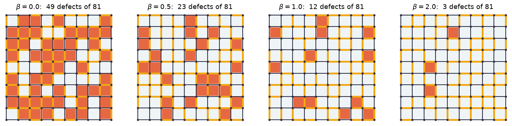

Labelings, models, and gauge theory
A computational course for CS and math undergraduates.
The course starts from an abstract framework: random labelings of a graph by a group. It derives "quantum dynamics" as a consequence, rather than assuming it, and only then turns to physics, showing that lattice Yang–Mills is one model in the framework. Every idea is checked numerically on an example small enough to enumerate exactly.
Each chapter is a Jupyter notebook, shown here as a static page with its code, outputs and figures, and with the answers to the exercises folded away.
Run the notebooks in your browser ↗
· Code on GitHub ↗

Course map
I. The world of labelings
- 0. A market of currencies — exchange rates as labels, arbitrage as a loop product.
- 1. Labelings, reframings and classes — any group of labels, and what survives a change of conventions.
- Interlude. Why the labels are forced — charged fields, and electromagnetism as circle labels.
- 2. Models — a probability distribution on labelings, set by a face cost and the stiffness β.
- 3. What a model can tell you — invariants, averages, and loops that decay with area.
- 4. Sampling — Markov chains with honest error bars, and a jump in four dimensions.
II. Dynamics from the distribution
- 5. Layers and the transfer matrix — eigenvalues as rates at which layers forget each other.
Bridge
- 6. Yang–Mills and the Millennium problem, in our terms — the problem stated in the course's vocabulary.
III. What can be proved
- 7. A gap you can prove — coupling gives a gap at small stiffness, and why it stops short of the continuum.